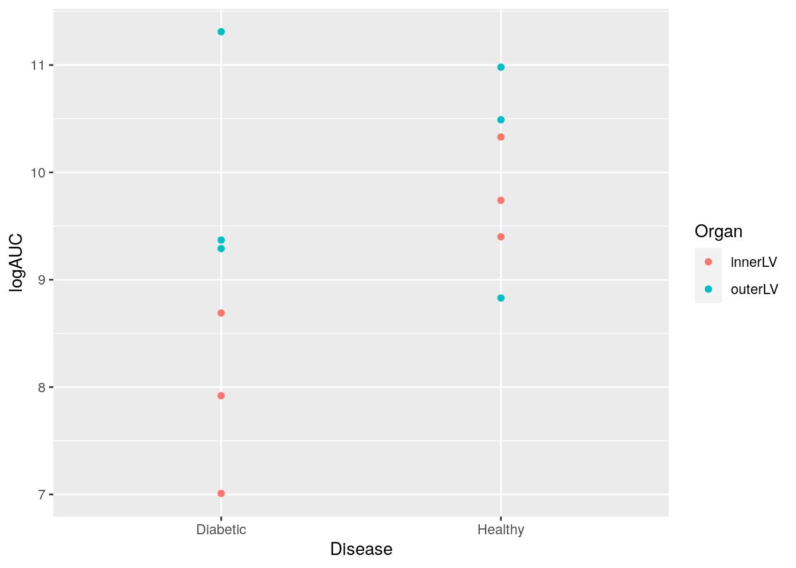

7 Factorial experiments

7.1 Learning objectives
- Describe and discuss factorial experiments with both equal and unequal replication
- Carry out linear regression in
Rwith two categorical explanatory variables and an interaction (two-way ANOVA with interaction) and draw the appropriate inference - Calculate the marginal means for a balanced and unbalanced design
7.2 Factorial design (as a CRD)
Example
Scientific Objective Global metabolic profiling and comparison of relative abundances of proteins in the inner and outer left ventricle wall of diabetic and healthy male Wistar rats.

7.2.1 Equal replications (balanced design)
Analysis using lm()
Fitting models with interaction terms
## Rows: 12
## Columns: 5
## $ Disease <chr> "Healthy", "Healthy", "Healthy", "Healthy", "Healthy", "Health…
## $ Organ <chr> "innerLV", "outerLV", "innerLV", "outerLV", "innerLV", "outerL…
## $ Animal <dbl> 1, 2, 3, 4, 5, 6, 7, 8, 9, 10, 11, 12
## $ Sample <dbl> 1, 2, 1, 2, 1, 2, 1, 2, 1, 2, 1, 2
## $ logAUC <dbl> 9.40, 8.83, 10.33, 10.49, 9.74, 10.98, 7.92, 9.37, 8.69, 11.31…## change to factors (saves errors with predictmeans)
factorial$Disease <- as.factor(factorial$Disease)
factorial$Organ <- as.factor(factorial$Organ)
## shorthand version
fac_lm <- lm(logAUC ~ Disease*Organ, data = factorial)
## longhand version
fac_lm_lh <- lm(logAUC ~ Disease + Organ +Disease:Organ, data = factorial)
## both are the SAME
cbind("short hand" = coef(fac_lm),"long hand" = coef(fac_lm_lh))## short hand long hand
## (Intercept) 7.873333 7.873333
## DiseaseHealthy 1.950000 1.950000
## OrganouterLV 2.116667 2.116667
## DiseaseHealthy:OrganouterLV -1.840000 -1.840000So the full model is
\[ \begin{aligned} \operatorname{logAUC} &= \alpha + \beta_{1}(\operatorname{Disease}_{\operatorname{Healthy}}) + \beta_{2}(\operatorname{Organ}_{\operatorname{outerLV}}) + \beta_{3}(\operatorname{Disease}_{\operatorname{Healthy}} \times \operatorname{Organ}_{\operatorname{outerLV}})\ + \\ &\quad \epsilon \end{aligned} \]
And the gobal null hypotheses being tested are:
- \(H_0: \hat{\mu}_{\text{Diabetic}} = \hat{\mu}_{\text{Healthy}}\)
- \(H_0: \hat{\mu}_{\text{innerLV}} = \hat{\mu}_{\text{outerLV}}\)
- \(H_0: \hat{\mu}_{\text{Diabetic,innerLV}} = \hat{\mu}_{\text{Diabetic,outerLV}} = \hat{\mu}_{\text{Healthy,innerLV}} = \hat{\mu}_{\text{Healthy,outerLV}}\)
## Analysis of Variance Table
##
## Response: logAUC
## Df Sum Sq Mean Sq F value Pr(>F)
## Disease 1 3.1827 3.1827 3.6304 0.09320 .
## Organ 1 4.2960 4.2960 4.9003 0.05775 .
## Disease:Organ 1 2.5392 2.5392 2.8963 0.12719
## Residuals 8 7.0135 0.8767
## ---
## Signif. codes: 0 '***' 0.001 '**' 0.01 '*' 0.05 '.' 0.1 ' ' 1Plotting the fitted model

Note with a balanced design ordering of term doesn’t matter. For example,
## Analysis of Variance Table
##
## Response: logAUC
## Df Sum Sq Mean Sq F value Pr(>F)
## Disease 1 3.1827 3.1827 3.6304 0.09320 .
## Organ 1 4.2960 4.2960 4.9003 0.05775 .
## Disease:Organ 1 2.5392 2.5392 2.8963 0.12719
## Residuals 8 7.0135 0.8767
## ---
## Signif. codes: 0 '***' 0.001 '**' 0.01 '*' 0.05 '.' 0.1 ' ' 1## Analysis of Variance Table
##
## Response: logAUC
## Df Sum Sq Mean Sq F value Pr(>F)
## Organ 1 4.2960 4.2960 4.9003 0.05775 .
## Disease 1 3.1827 3.1827 3.6304 0.09320 .
## Organ:Disease 1 2.5392 2.5392 2.8963 0.12719
## Residuals 8 7.0135 0.8767
## ---
## Signif. codes: 0 '***' 0.001 '**' 0.01 '*' 0.05 '.' 0.1 ' ' 1Inference using predictmeans
interaction <- predictmeans(fac_lm, modelterm = "Disease:Organ", pairwise = TRUE)
interaction$`Predicted Means`## Organ innerLV outerLV
## Disease
## Diabetic 7.8733 9.9900
## Healthy 9.8233 10.1000## All means have the same Stder
## 0.54058## Diabetic:innerLV Diabetic:outerLV Healthy:innerLV
## Diabetic:innerLV 0.00000 -2.11667 -1.95000
## Diabetic:outerLV 1.76294 0.00000 0.16667
## Healthy:innerLV 1.76294 1.76294 0.00000
## Healthy:outerLV 1.76294 1.76294 1.76294
## Healthy:outerLV
## Diabetic:innerLV -2.22667
## Diabetic:outerLV -0.11000
## Healthy:innerLV -0.27667
## Healthy:outerLV 0.00000
## attr(,"Significant level")
## [1] 0.05
## attr(,"Degree of freedom")
## [1] 8
## attr(,"Note")
## [1] "LSDs matrix has mean differences (row-col) above the diagonal, LSDs (adjusted by 'none' method) below the diagonal"7.2.2 Unqual replications (unbalanced design)
As per lecture slides let’s set logAUC obvservations 1,2,3, 10 to NA
## # A tibble: 12 x 5
## Disease Organ Animal Sample logAUC
## <fct> <fct> <dbl> <dbl> <dbl>
## 1 Healthy innerLV 1 1 NA
## 2 Healthy outerLV 2 2 NA
## 3 Healthy innerLV 3 1 NA
## 4 Healthy outerLV 4 2 10.5
## 5 Healthy innerLV 5 1 9.74
## 6 Healthy outerLV 6 2 11.0
## 7 Diabetic innerLV 7 1 7.92
## 8 Diabetic outerLV 8 2 9.37
## 9 Diabetic innerLV 9 1 8.69
## 10 Diabetic outerLV 10 2 NA
## 11 Diabetic innerLV 11 1 7.01
## 12 Diabetic outerLV 12 2 9.29## # A tibble: 8 x 5
## Disease Organ Animal Sample logAUC
## <fct> <fct> <dbl> <dbl> <dbl>
## 1 Healthy outerLV 4 2 10.5
## 2 Healthy innerLV 5 1 9.74
## 3 Healthy outerLV 6 2 11.0
## 4 Diabetic innerLV 7 1 7.92
## 5 Diabetic outerLV 8 2 9.37
## 6 Diabetic innerLV 9 1 8.69
## 7 Diabetic innerLV 11 1 7.01
## 8 Diabetic outerLV 12 2 9.29## # A tibble: 4 x 3
## # Groups: Disease [2]
## Disease Organ n
## <fct> <fct> <int>
## 1 Diabetic innerLV 3
## 2 Diabetic outerLV 2
## 3 Healthy innerLV 1
## 4 Healthy outerLV 2Analysis using lm()
Note: order matters. For example,
## Analysis of Variance Table
##
## Response: logAUC
## Df Sum Sq Mean Sq F value Pr(>F)
## Disease 1 7.1102 7.1102 18.4955 0.01264 *
## Organ 1 3.1149 3.1149 8.1027 0.04656 *
## Disease:Organ 1 0.0913 0.0913 0.2376 0.65145
## Residuals 4 1.5377 0.3844
## ---
## Signif. codes: 0 '***' 0.001 '**' 0.01 '*' 0.05 '.' 0.1 ' ' 1## Analysis of Variance Table
##
## Response: logAUC
## Df Sum Sq Mean Sq F value Pr(>F)
## Organ 1 5.7291 5.7291 14.9029 0.01814 *
## Disease 1 4.4960 4.4960 11.6953 0.02678 *
## Organ:Disease 1 0.0913 0.0913 0.2376 0.65145
## Residuals 4 1.5377 0.3844
## ---
## Signif. codes: 0 '***' 0.001 '**' 0.01 '*' 0.05 '.' 0.1 ' ' 17.3 TL;DR, Model formula syntax in R
In R to specify the model you want to fit you typically create a model formula object; this is usually then passed as the first argument to the model fitting function (e.g., lm()).
Some notes on syntax:
Consider the model formula example y ~ x + z + x:z. There is a lot going on here:
- The variable to the left of
~specifies the response, everything to the right specify the explanatory variables +indicated to include the variable to the left of it and to the right of it (it does not mean they should be summed):denotes the interaction of the variables to its left and right
Additional, some other symbols have special meanings in model formula:
*means to include all main effects and interactions, soa*bis the same asa + b + a:b^is used to include main effects and interactions up to a specified level. For example,(a + b + c)^2is equivalent toa + b + c + a:b + a:c + b:c(note(a + b + c)^3would also adda:b:c)-excludes terms that might otherwise be included. For example,-1excludes the intercept otherwise included by default, anda*b - bwould producea + a:b
Mathematical functions can also be directly used in the model formula to transform a variable directly (e.g., y ~ exp(x) + log(z) + x:z). One thing that may seem counter intuitive is in creating polynomial expressions (e.g., x2). Here the expression y ~ x^2 does not relate to squaring the explanatory variable x (this is to do with the syntax ^ you see above. To include x2 as a term in our model we have to use the I() (the “as-is” operator). For example, y ~ I(x^2)).